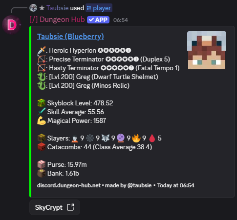

/player
Description
Fetches and displays player information for the given IGN and includes a button to open their SkyCrypt page. The displayed information is partly configurable and provided by the Hypixel Wrapper Library.
Arguments
Name | Type | Description | Optional? | Additional |
|---|---|---|---|---|
| String | Minecraft in-game name (IGN) to show. | ❌ No | Min length: 2 |
| String | SkyBlock profile name or profile UUID to display. | ✅ Yes | Autocompleted from the player's profiles; otherwise uses their primary or selected profile. |
Examples
Show player
/player ign: Taubsie

Choose a profile
/player ign: Taubsie profile: Apple
See Also
/lookup: check if a user/IGN is flagged.
Player Profiles: the feature is described here as well
/set-primary-profile: choose the default profile used by bot features.
28 August 2026